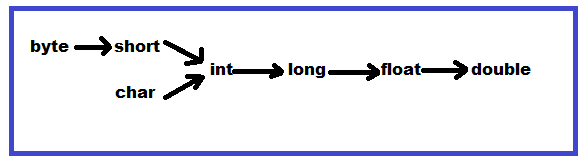

Overloading:
- Two methods are said to be overloaded if both method having same name but different arguments .
- We can take two methods with the same name and different arguments are allowed and these methods are considered as overloaded methods .
- Having overloading concept in java reduces complexity of the programming .
Automatic Promotion in Overloading:
- In overloading method resolution, if there is no method with exact match we won't get any compile time error immediately.
First compiler promotes the argument to the next level and checks whether the matched method is available or not .
If matched method is available then it will be considered, otherwise, compiler promotes the arguments to the next level .
This process will continued until all possible promotions . Still if the matched method is not available, then we will get compile time error .
This process is called automatic promotion in overloading .
The following are various possible automatic promotions in overloading .
